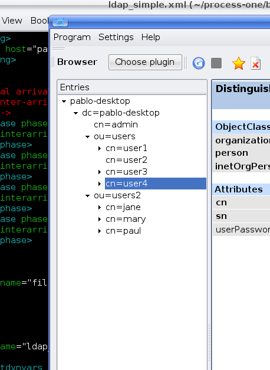
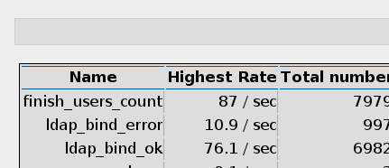
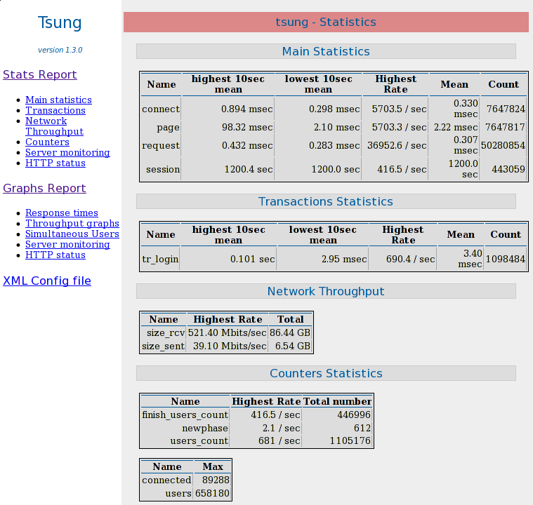
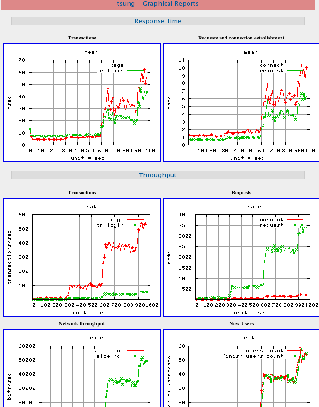
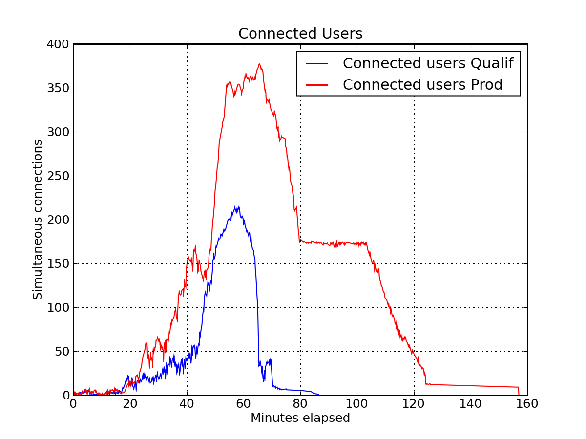

Tsung User’s manual
| Version: | 1.3.3 |
| Date : | August 17, 2010 |
Contents
1 Introduction
1.1 What is Tsung ?
Tsung (formerly IDX-Tsunami) is a distributed load testing tool. It is
protocol-independent and can currently be used to stress HTTP, WebDAV, SOAP,
PostgreSQL, MySQL, LDAP, and Jabber/XMPP servers.
It is distributed under the GNU General Public License version 2.
1.2 What is Erlang and why is it important for Tsung ?
Tsung’s main strength is its ability to simulate a huge number of
simultaneous user from a single CPU. When used on cluster you can
generate a really impressive load on a server with a modest cluster,
easy to set-up and to maintain.
Tsung is developed in Erlang and this is where the power
of Tsung resides.
Erlang is a concurrency-oriented programming language.
Tsung is based on the Erlang OTP (Open Transaction Platform) and
inherits several characteristics from Erlang:
-
Performance: Erlang has been made to support hundred thousands
of lightweight processes in a single virtual machine.
- Scalability: Erlang runtime environment is naturally
distributed, promoting the idea of process’s location transparency.
- Fault-tolerance:Erlang has been built to develop robust,
fault-tolerant systems. As such, wrong answer sent from the server
to Tsung does not make the whole running benchmark crash.
More information on Erlang on http://www.erlang.org and
http://www.erlang-projects.org/
1.3 Tsung background
History:
-
Tsung development was started by Nicolas Niclausse in
2001 as a distributed jabber load stress tool for internal use at
http://IDEALX.com/. It has evolved as an open-source
multi-protocol load testing tool several months later. The HTTP
support was added in 2003, and this tool has been used for several
industrial projects. It is now hosted by Erlang-projects, and
supported by http://process-one.net/. The list of contributors
is available in the source archive
(https://git.process-one.net/tsung/mainline/blobs/master/CONTRIBUTORS).
- It is an industrial strength implementation of a stochastic model
for real users simulation. User events distribution is based on a
Poisson Process. More information on this topic in:
Z. Liu, N. Niclausse, and C. Jalpa-Villanueva. Traffic Model
and Performance Evaluation of Web Servers. Performance Evaluation,
Volume 46, Issue 2-3, October 2001.
- This model has already been tested in the INRIA WAGON
research prototype (Web trAffic GeneratOr and beNchmark). WAGON was
used in the http://www.vthd.org/ project (Very High Broadband
IP/WDM test platform for new generation Internet applications, 2000-2004).
Tsung has been used for very high load tests:
-
Jabber/XMPP protocol:
-
90 000 simultaneous jabber users on a
4-node Tsung cluster (3xSun V240 + 1 Sun V440)
- 10 000 simultaneous users.
Tsung was running on a 3-computers cluster (CPU
800MHz)
- HTTP and HTTPS protocol:
-
12 000 simultaneous users.
Tsung were running on a 4-computers cluster. The
tested platform reached 3 000 requests per second.
- 10 million simultaneous users running on a 75-computers cluster,
generating more than one million requests per second.
Tsung has been used at:
-
DGI (Direction Générale des impôts): French finance ministry
- Cap Gemini Ernst & Young
- IFP (Institut Français du Pétrole): French Research Organization
for Petroleum
- LibertySurf
- Sun™for their Mooddlerooms platform on Niagara processors:
http://blogs.sun.com/kevinr/resource/Moodle-Sun-RA.pdf
2 Features
2.1 Tsung main features
-
High Performance: Tsung can simulate a
huge number of simultaneous users per physical computer: It can
simulates thousands of users on a single CPU (Note: a simulated user
is not always active: it can be idle during a thinktime
period). Traditional injection tools can hardly go further than a
few hundreds (Hint: if all you want to do is requesting a single URL
in a loop, use ab; but if you want to build complex
scenarios with extended reports, Tsung is for you).
- Distributed: the load can be distributed on a cluster of
client machines
- Multi-Protocols using a plug-in system: HTTP (both standard
web traffic and SOAP), WebDAV, Jabber/XMPP and PostgreSQL are currently
supported. Experimental LDAP and MySQL plugins were included in the 1.3.0 release.
- SSL support
- Several IP addresses can be used on a single machine using
the underlying OS IP Aliasing
- OS monitoring (CPU, memory and network traffic) using Erlang
agents on remote servers or SNMP
- XML configuration system: complex user’s scenarios are written
in XML. Scenarios can be written with a simple browser using the
Tsung recorder (HTTP and PostgreSQL only).
- Dynamic scenarios: You can get dynamic data from the
server under load (without writing any code) and re-inject it in
subsequent requests. You can also loop, restart or stop a
session when a string (or regexp) matches the server response.
- Mixed behaviours: several sessions can be used to simulate
different type of users during the same benchmark. You can define
the proportion of the various behaviours in the benchmark scenario.
- Stochastic processes: in order to generate a realistic traffic,
user thinktimes and the arrival rate can be randomize using a probability
distribution (currently exponential)
2.2 HTTP related features
-
HTTP/1.0 and HTTP/1.1 support
- GET, POST, PUT, DELETE and HEAD requests
- Cookies: Automatic cookies management( but you can also manually
add more cookies)
'GET If-modified since' type of request
- WWW-authentication Basic
- User Agent support
- Any HTTP Headers can be added
- Proxy mode to record sessions using a Web browser
- SOAP support using the HTTP mode (the SOAPAction HTTP header is
handled).
- HTTP server or proxy server load testing.
2.3 WEBDAV related features
The WebDAV (RFC 4918) plugin is a superset of the HTTP plugin. It adds the
following features (some versionning extensions to WebDAV (RFC 3253)
are also supported):
-
Methods implemented: DELETE, CONNECT, PROPFIND, PROPPATCH, COPY,
MOVE, LOCK, UNLOCK, MKCOL, REPORT, OPTIONS, MKACTIVITY, CHECKOUT, MERGE
- Recording of DEPTH, IF, TIMEOUT OVERWRITE, DESTINATION, URL and
LOCK-TOKEN Headers.
2.4 Jabber/XMPP related features
-
Authentication (plain-text, digest and sip-digest)
- presence and register messages
- Chat messages to online or offline users
- MUC: join room, send message in room, change nickname
- Roster set and get requests
- Global users
' synchronization can be set on specific actions
- raw XML messages
- PubSub
- Multiple vhost instances supported
2.5 PostgreSQL related features
-
Basic and MD5 Authentication
- Basic Queries (Extended queries not yet supported)
- Proxy mode to record sessions
2.6 MySQL related features
This plugin is experimental. It works only with MySQL version 4.1 and higher.
-
Secured Authentication method only (MySQL >= 4.1)
- Basic Queries
2.7 LDAP related features
This plugin is experimental.
-
bind
- add, modify and search queries
- starttls (only with R12B-0 Erlang and up)
2.8 Complete reports set
Measures and statistics produced by Tsung are extremely feature-full.
They are all represented as a graphic. Tsung produces
statistics regarding:
-
Performance: response time, connection time, decomposition of the user scenario based on request grouping instruction (called transactions), requests per second
- Errors: Statistics on page return code to trace errors
- Target server behaviour: An Erlang agent can gather information
from the target server(s). Tsung produces graphs for CPU and memory
consumption and network traffic. SNMP and munin is also supported to
monitor remote servers.
Note that Tsung takes care of the synchronization process
by itself. Gathered statistics are «synchronized».
It is possible to generate graphs during the benchmark as statistics
are gathered in real-time.
2.9 Highlights
Tsung has several advantages over other injection tools:
-
High performance and distributed benchmark: You
can use Tsung to simulate tens of thousands of virtual users.
- Ease of use: The hard work is already done for all supported
protocol. No need to write complex scripts. Dynamic scenarios only
requires small trivial piece of code.
- Multi-protocol support: Tsung is for example one of
the only tool to benchmark SOAP applications
- Monitoring of the target server(s) to analyze the behaviour
and find bottlenecks. For example, it has been used to analyze cluster
symmetry (is the load properly balanced ?) and to determine the best
combination of machines on the three cluster tiers (Web engine, EJB
engine and database)
3 Installation
This package has been tested on Linux, FreeBSD and Solaris. A port is
available on MacOS X. It should
work on Erlang supported platforms (Linux, Solaris, *BSD, Win32 and
MacOS-X).
3.1 Dependencies
-
Erlang/OTP R10B-0 and up
(http://www.erlang.org/download.html). Erlang is now
part of fedora and debian/ubuntu repositories.
- extended regexp module (used for dynamic variables):
gregexp.erl available at
http://www.cellicium.com/erlang/contribs/ . The module is
included in the source and binary distribution of Tsung. It
is released under the EPL License.
- pgsql module made by Christian Sunesson (for the PostgreSQL plugin):
sources available at
http://jungerl.sourceforge.net/ . The module is
included in the source and binary distribution of Tsung. It
is released under the EPL License.
- mysql module made by Magnus Ahltorp & Fredrik Thulin (for the mysql plugin):
sources available at
http://www.stacken.kth.se/projekt/yxa/ . The modified module is
included in the source and binary distribution of Tsung. It
is released under the three-clause BSD License.
- eldap module (for the LDAP plugin):
sources available at
http://jungerl.sourceforge.net/ . The module is
included in the source and binary distribution of Tsung. It
is released under the GPL License.
- mochiweb libs (for xpath parsing, optionally used for dynamic variables in
the HTTP plugin):
sources available at
http://code.google.com/p/mochiweb/ . The module is
included in the source and binary distribution of Tsung. It
is released under the MIT License.
- gnuplot and perl5 (optional; for graphical output with
tsung_stats.pl script). The Template Toolkit is used for HTML
reports (see http://template-toolkit.org/)
- python and mathplotlib (optional; for graphical output with
tsung-plotter).
- for distributed tests, you need an ssh access to remote
machines without password (use a RSA/DSA key without pass-phrase or
ssh-agent) (rsh is also supported)
- bash
3.2 Compilation
|
| ./configure
make
make install
|
| |
|
|
If you want to download the development version, use git: git
clone git://git.process-one.net/tsung/mainline.git (see https://git.process-one.net/tsung).
3.3 Configuration
The default configuration file is ~/.tsung/tsung.xml (
there are several sample files in
/usr/share/doc/tsung/examples).
Log files are saved in ~/.tsung/log/ . A new sub-directory
is created for each test using the current date as name
(~/.tsung/log/20040217-09:40 for ex.)
3.4 Running
Two commands are installed in the directory $PREFIX/bin:
tsung and tsung-recorder. A man page is available
for both commands.
|
| >tsung -h
Usage: tsung <options> start|stop|debug|status
Options:
-f <file> set configuration file (default is ~/.tsung/tsung.xml)
-l <logfile> set log file (default is ~/.tsung/log/tsung.log)
-i <id> set controller id (default is empty)
-r <command> set remote connector (default is ssh)
-F use long names (FQDN) for erlang nodes
-v print version information and exit
-h display this help and exit
|
| |
|
|
A typical way of using tsung is to run:
tsung -f myconfigfile.xml start.
The command will print the current log directory created for the test, and wait until the test is
over.
3.5 Feedback
Use the Tsung mailing list (see
https://lists.process-one.net/mailman/listinfo/tsung-users) if you have
suggestions or questions about Tsung. You can also use the
bug-tracker available at https://support.process-one.net/browse/TSUN.
You can also try the #tsung IRC channel on Freenode.
4 Benchmark approach
4.1 HTTP/WebDAV benchmark approach
4.1.1 Benchmarking a Web server
-
Record one or more sessions: start the recorder with:
tsung-recorder start, and then configure your browser to use Tsung
proxy recorder (the listen port is 8090). A session file will be
created. For HTTPS recording, use http://- instead of
https:// in your browser.
- Edit / organize scenario, by adding recorded sessions in the
configuration file.
- Write small code for dynamic parts if needed and place dynamic mark-up
in the scenario.
- Test and adjust scenario to have a nice progression of the load. This
is highly dependent of the application and of the size of the target
server(s). Calculate the normal duration of the scenario and use the
interarrival time between users and the duration of the phase to estimate
the number of simultaneous users for each given phase.
- Launch benchmark with your first application parameters set-up:
tsung start (run man tsung for more options)
- Wait for the end of the test or stop by hand with
tsung stop (reports can also be generated during the
test (see § 7) : the statistics are
updated every 10 seconds). For a brief summary of the current
activity, use tsung status
- Analyze results, change parameters and relaunch another benchmark
It’s the same approach as HTTP: first you start to record one or more
sessions with the recorder:
tsung-recorder -p webdav start
4.1.3 Benchmarking a proxy server
By default, the HTTP plugin is used to benchmark HTTP servers. But you
can also benchmark HTTP Proxy servers. To do that, you must add in the
options section:
|
| <option type="ts_http" name="http_use_server_as_proxy" value="true"></option>
|
| |
|
|
4.2 LDAP benchmark approach
An LDAP plugin for the recorder is not yet implemented, so you have to
write the session by yourself; see section 6.6.6 for
more information.
4.3 PostgreSQL benchmark approach
It’s the same approach as HTTP: first you start to record one or more
sessions with the recorder:
tsung-recorder -p pgsql start
This will start a proxy listening to port 8090 and will proxy requests
to 127.0.0.0:5432.
To choose another port and/or address:
tsung-recorder -L 5432 -I 10.6.1.1 -P 5433 -p pgsql start
This will start a proxy listening to port 5432 and will proxy requests
to 10.6.1.1:5433.
4.4 MySQL benchmark approach
A MySQL plugin for the recorder is not yet implemented, so you have to
write the session by yourself; see section 6.6.5 for
more information.
4.5 Jabber/XMPP benchmark approach
This paragraph explains how to write a session for Jabber/XMPP.
There are two differences between HTTP and Jabber testing:
-
There is no recorder for Jabber, so you have to write your
sessions by hand (an example is provided in
6.6.3).
- the jabber plugin does not parse XML; instead it uses packet
acknowledgments.
4.5.2 Acknowledgments of messages
Since the jabber plugin does not parse XML (historically, it was for
performance reasons), you must have a way to tell when a request is
finished. There are 3 possibilities:
-
ack=local
- as soon as a packet is received from the server, the
request is considered as completed. Hence if you use a local ack with a request
that do not require a response from the server (presence for ex.), it
will wait forever (or until a timeout is reached).
- ack=no_ack
- as soon as the request is send, it is considered as completed (do
not wait for incoming data)
- ack=global
- synchronized users. its main use is for waiting for all
users to connect before sending messages. To do that, set a request
with global ack (it can be the first presence msg:
|
| <request> <jabber type="presence" ack="global"/> </request>
|
| |
|
|
You also have to specify the number of users to be connected:
|
| <option type="ts_jabber" name="global_number" value="100"></option>
|
| |
|
|
To be sure that exactly global_number users are started, add the
’maxnumber’ attribute to ’users’
|
| <users maxnumber="100" interarrival="1.0" unit="second"></users>
|
| |
|
|
If you do not specify maxnumber, the global ack will be reset every
global_number users
New in 1.2.2: This version adds an new option for a
session. if you set the attribute bidi (for bidirectional)
in the session tag: <session ... bidi=’true’>,
then incoming messages from the server will be analyzed. Currently,
only roster subscription requests are handled: if a user received a
subscription request (<presence ... type=’subscribe’>), it
will respond with a <presence ... type=’subscribed’>
message.
4.5.3 Status: Offline, Connected and Online
You can send messages to offline or online users. A user is considered
online when he has send a presence:initial message (before
this message , the state of the user is connected).
If you want to switch back to connected before going
offline, you can use a presence:final message:
presence:final does two things:
-
It removes the client from the list of Online users, and moves
them into the list of Connected users.
- It sends a broadcast presence update of type=’unavailable’.
presence:final is optional.
warn: this is new in 1.2.0, in earlier version, only 2
status were available: online and offline; a user was considered
online as soon as it was connected.
4.5.4 Authentication
Below are configuration examples for the possible authentication
methods. Note: the regular expressions used here are only examples -
they may need to be altered depending on how a particular server
implementation composes messages (see also 6.5.1
for password settings).
-
plain authentication - sends clear-text passwords:
|
| <session probability="100" name="jabber-plain" type="ts_jabber">
<request> <jabber type="connect" ack="local"></jabber> </request>
<thinktime value="2"></thinktime>
<transaction name="auth_plain">
<request> <jabber type="auth_get" ack="local"></jabber> </request>
<request> <jabber type="auth_set_plain" ack="local"></jabber> </request>
</transaction>
...
</session>
|
| |
|
|
- digest authentication as described in XMPP JEP-0078: Non-SASL Authentication
http://www.jabber.org/jeps/jep-0078.html
|
| <session probability="100" name="jabber-digest" type="ts_jabber">
<!-- regexp captures stream ID returned by server -->
<request>
<dyn_variable name="sid" regexp="<stream:stream id="\(.*\)" xmlns:stream"/>
<jabber type="connect" ack="local"></jabber>
</request>
<thinktime value="2"></thinktime>
<transaction name="auth_digest">
<request> <jabber type="auth_get" ack="local"></jabber> </request>
<request subst='true'> <jabber type="auth_set_digest" ack="local"></jabber> </request>
</transaction>
...
</session>
|
| |
|
|
- sip-digest authentication
|
| <session probability="100" name="jabber-sipdigest" type="ts_jabber">
<request> <jabber type="connect" ack="local"></jabber> </request>
<thinktime value="2"></thinktime>
<transaction name="auth_sipdigest">
<!-- regexp captures nonce value returned by server -->
<request>
<dyn_variable name="nonce"
regexp="<Nonce encoding="hex">\(.*\)<\/Nonce>"/>
<jabber type="auth_get" ack="local"></jabber>
</request>
<request subst='true'> <jabber type="auth_set_sip" ack="local"></jabber> </request>
</transaction>
...
</session>
|
| |
|
|
5 Using the proxy recorder
The recorder has three plugins: for HTTP, WebDAV and for PostgreSQL.
To start it, run tsung-recorder -p <PLUGIN> start, where PLUGIN can be
http, webdav or pgsql for PostgreSQL. The default plugin is http.
The proxy is listening to port 8090. You can change the port with
-L portnumber.
To stop it, use tsung-recorder stop.
The recorded session is created as
~/.tsung/tsung_recorderYYYMMDD-HH:MM.xml; if it doesn’t work,
take a look at ~/.tsung/log/tsung.log-tsung_recorder@hostname
During the recording, you can add custom tag in the XML file, this can
be useful to set transactions or comments:
tsung-recorder record_tag "<transaction name=’login’>’’
Once a session has been created, you can insert it in your main configuration
file, either by editing by hand the file, or by using an ENTITY
declaration, like:
|
| <!DOCTYPE tsung SYSTEM "/usr/share/tsung/tsung-1.0.dtd" [
<!ENTITY mysession1 SYSTEM "/home/nniclausse/.tsung/tsung_recorder20051217-13:11.xml">
]>
...
<sessions>
&mysession1;
</sessions>
|
| |
|
|
5.1 PostgreSQL
For PostgreSQL, the proxy will connect to the server at IP 127.0.0.1
and port 5432. Use -I serverIP to change the IP and
-P portnumber to change the port.
5.2 HTTP and WEBDAV
For HTTPS recording, use http://- instead of
https:// in your browser
New in 1.2.2: For HTTP, you can configure the recorder to
use a parent proxy (but this will not work for https). Add the -u
option to enable parent proxy, and use -I serverIP to set
the IP and -P portnumber to set the port of the parent.
6 Understanding tsung.xml configuration file
The default encoding is utf-8. You can use a different encoding, like in:
|
| <?xml version="1.0" encoding="ISO-8859-1"?>
|
| |
|
|
6.1 File structure
Scenarios are enclosed into Tsung tags:
|
| <?xml version="1.0"?>
<!DOCTYPE tsung SYSTEM "/usr/share/tsung/tsung-1.0.dtd" [] >
<tsung loglevel="info">
...
</tsung>
|
| |
|
|
If you add the attribute dumptraffic="true", all the
traffic will be logged to a file. Warn: this will considerably
slow down Tsung, so use with care. It is useful for debugging
purpose. You can use the attribute dumptraffic="light" to
dump only the first 44 bytes.
The loglevel can also have a great impact on performance:
For high load, warning is recommended.
Possible values are:
-
emergency
- critical
- error
- warning
- notice (default)
- info
- debug
For REALLY verbose logging, recompile tsung with make debug
and set loglevel to debug.
6.2 Clients and server
Scenarios start with clients (Tsung cluster) and server definitions:
6.2.1 Basic setup
For non distributed load, you can use a basic setup like:
|
| <clients>
<client host="localhost" use_controller_vm="true"/>
</clients>
<servers>
<server host="192.168.1.1" port="80" type="tcp"></server>
</servers>
|
| |
|
|
This will start the load on the same host and on the same Erlang
virtual machine as the controller.
The server is the entry point into the cluster (New in 1.2.0:
if several servers are defined, a round robin algorithm is used to
choose the server).
6.2.2 Advanced setup
The next example is more complex, and use several features for
advanced distributed testing:
|
| <clients>
<client host="louxor" weight="1" maxusers="800">
<ip value="10.9.195.12"></ip>
<ip value="10.9.195.13"></ip>
</client>
<client host="memphis" weight="3" maxusers="600" cpu="2"/>
</clients>
<servers>
<server host="10.9.195.1" port="8080" type="tcp"></server>
</servers>
|
| |
|
|
Several virtual IP can be used to simulate more machines. This is
very useful when a load-balancer use the client's IP to
distribute the traffic among a cluster of servers. New in
1.1.1: IP is no longer mandatory. If not specified, the default IP will
be used.
In this example, a second machine is used in the Tsung cluster,
with a higher weight, and 2 cpus. Two Erlang virtual machines will be
used to take advantage of the number of CPU.
Note: Even if an Erlang VM is now able to handle severals CPUs
(erlang SMP), benchmarks shows that it’s more efficient to use one VM
per CPU (with SMP disabled) for tsung clients. Only the controller node is using SMP
erlang. Therefore, you cpu should be equal to the number of cores of
your nodes. If you prefer to use erlang SMP, add the -s
option when starting tsung (and don’t set cpu in the config
file).
By default, the load is distributed uniformly on all CPU (one cpu
per client by default). The weight parameter (integer) can be used to
take into account the speed of the client machine. For instance, if
one real client has a weight of 1 and the other client has a weight
of 2, the second one will start twice the number of users as the
first (the proportions will be 1/3 and 2/3). In the earlier example
where for the second client has 2 CPU and weight=3, the weight is
equal to 1.5 for each CPU.
The maxusers parameter is used to bypass the limit of
maximum number of sockets opened by a single process (usually 1024)
and the lack of scalability of the select system call. When
the number of users is higher than the limit, a new erlang virtual
machine will be started to handle new users. The default value of
maxusers is 800 . Nowadays, with kernel polling enable, you
can and should use a very large value for maxusers (30000 for example) without
performance penalty (but don’t forget to raise the limit of the OS with
ulimit -n, see also FAQ A.3).
6.2.3 Running tsung with a job scheduler
Tsung is able to get it’s client node list from a batch/job
scheduler. It currently handle pbs/torque, LSF and OAR. To do this,
set the type attribute to batch, e.g.:
|
| <client type="batch" batch="torque" maxusers="30000">
|
| |
|
|
6.3 Monitoring
Tsung is able to monitor remote servers using several backends that
communicates with remote agent; This
is configured in the <monitoring> section. Available
statistics are: cpu activity, load average, memory usage.
Note that you can get the nodes to monitor from a job scheduler, like:
|
| <monitor batch="true" host="torque" type="erlang"></monitor>
|
| |
|
|
Several types of remote agents are supported (erlang is the default) :
The remote agent is started by Tsung. It use erlang communications to
retrieve statistics of activity on the server. For example, here is a
cluster monitoring definition based on Erlang agents, for a cluster of
6 computers:
|
| <monitoring>
<monitor host="geronimo" type="erlang"></monitor>
<monitor host="bigfoot-1" type="erlang"></monitor>
<monitor host="bigfoot-2" type="erlang"></monitor>
<monitor host="f14-1" type="erlang"></monitor>
<monitor host="f14-2" type="erlang"></monitor>
<monitor host="db" type="erlang"></monitor>
</monitoring>
|
| |
|
|
Note: monitored computers needs to be
accessible through the network, and erlang communications must be
allowed (no firewall is better ). SSH (or rsh) needs to be configured to
allow connection without password on. You must use the same
version of Erlang/OTP on all nodes otherwise it may not work
properly !
If you can’t have erlang installed on remote servers, you can use one
of the other available agents:
The type keyword snmp can replace the erlang keyword, if SNMP monitoring
is preferred. They can be mixed. Since version 1.2.2, you can customize the SNMP version,
community and port number. It uses the MIB provided in
net-snmp (see also A.9).
|
| <monitoring>
<monitor host="geronimo" type="snmp"/>
<monitor host="f14-2" type="erlang"></monitor>
<monitor host="db" type="snmp">
<snmp version="v2" community="mycommunity" port="11161"/>
</monitor>
</monitoring>
|
| |
|
|
The default version is v1, default community
public and default port 161.
Since version 1.3.1, Tsung is able to retrieve data from a munin-node agent
(see http://munin.projects.linpro.no/wiki/munin-node). The type
keyword must be set to munin, for example:
|
| <monitoring>
<monitor host="geronimo" type="munin"/>
<monitor host="f14-2" type="erlang"></monitor>
</monitoring>
|
| |
|
|
6.4 Defining the load progression
6.4.1 Randomly generated users
The load progression is set-up by defining several arrival phases:
|
| <load>
<arrivalphase phase="1" duration="10" unit="minute">
<users interarrival="2" unit="second"></users>
</arrivalphase>
<arrivalphase phase="2" duration="10" unit="minute">
<users interarrival="1" unit="second"></users>
</arrivalphase>
<arrivalphase phase="3" duration="10" unit="minute">
<users interarrival="0.1" unit="second"></users>
</arrivalphase>
</load>
|
| |
|
|
With this setup, during the first 10 minutes of the test, a new user
will be created every 2 seconds, then during the next 10 minutes, a
new user will be created every second, and for the last 10 minutes,
10 users will be generated every second. The test will finish when
all users have ended their session.
You can also use arrivalrate instead of
interarrival. For example, if you want 10 new users per
second, use:
|
| <arrivalphase phase="1" duration="10" unit="minute">
<users arrivalrate="10" unit="second"></users>
</arrivalphase>
|
| |
|
|
The complete sequence can be executed several times using the
loop attribute in the load tag
(loop=’2’ means the sequence will be looped twice, so the
complete load will be executed 3 times) (feature available since
version 1.2.2).
The load generated in terms of HTTP requests / seconds will also
depend on the mean number of requests within a session (if you have a
mean value of 100 requests per session and 10 new users per seconds,
the theoretical average throughput will be 1000 requests/ sec).
6.4.2 Statically generated users
If you want to start a given session (see 6.6) at a given time during the test,
it is possible since version 1.3.1:
|
| <load>
<arrivalphase phase="1" duration="10" unit="minute">
<users interarrival="2" unit="second"></users>
</arrivalphase>
<user session="http-example" start_time="185" unit="second"></user>
<user session="http-example" start_time="10" unit="minute"></user>
<user session="foo" start_time="11" unit="minute"></user>
</load>
<sessions>
<session name="http-example" probability="0" type="ts_http">
<request> <http url="/" method="GET"></http> </request>
</session>
<session name="foo" probability="100" type="ts_http">
<request> <http url="/" method="GET"></http> </request>
</session>
<sessions>
|
| |
|
|
In this example, we have two sessions, one has a "0" probability (and
therefore will not be used in the first phase), and the other
100%. We define 3 users starting respectively 3mn and 5 seconds
after the beginning of the test (using the http-example
session), one starting after 10 minutes, and a last one starting after
11 minutes (using the foo session this time)
6.4.3 Duration of the load test
By default, tsung will end when all started users have finished their
session. So it can be much longer than the duration of
arrivalphases. If you want to stop Tsung after a given duration
(even if phases are not finised or if some sessions are still actives),
you can do this with the duration attribute in
load (feature added in 1.3.2):
|
| <load duration="1" unit="hour">
<arrivalphase phase="1" duration="10" unit="minute">
<users interarrival="2" unit="second"></users>
</arrivalphase>
</load>
|
| |
|
|
Currently, the maximum value for duration is a little bit less than 50
days. unit can be second, minute or
hour.
6.5 Setting options
Default values can be set-up globally: thinktime between requests
in the scenario, ssl cipher algorithms, TCP/UDP buffer sizes (the default
value is 32KB). These values overrides
those set in session configuration tags if override is true.
|
| <option name="thinktime" value="3" random="false" override="true"/>
<option name="ssl_ciphers"
value="EXP1024-RC4-SHA,EDH-RSA-DES-CBC3-SHA"/>
<option name="tcp_snd_buffer" value="16384"></option>
<option name="tcp_rcv_buffer" value="16384"></option>
<option name="udp_snd_buffer" value="16384"></option>
<option name="udp_rcv_buffer" value="16384"></option>
|
| |
|
|
A new option is available in version 1.3.1: hibernate. This
is used to reduced memory consumption of simulated users during
thinktimes. By default, hibernation will be activated for thinktimes
higher than 10sec. This value can be changed like this:
|
| <option name="hibernate" value="5"></option>
|
| |
|
|
To disable hibernation, you must set the value to infinity.
6.5.1 XMPP/Jabber options
Default values for specific protocols can be defined. Here is an
example of option values for Jabber/XMPP:
|
| <option type="ts_jabber" name="global_number" value="5" />
<option type="ts_jabber" name="userid_max" value="100" />
<option type="ts_jabber" name="domain" value="jabber.org" />
<option type="ts_jabber" name="username" value="myuser" />
<option type="ts_jabber" name="passwd" value="mypasswd" />
<option type="ts_jabber" name="muc_service" value="conference.localhost"/>
|
| |
|
|
Using these values, users will be myuserXXX where XXX is an integer in
the interval [1:userid_max] and passwd mypasswdXXX
If not set in the configuration file, the values will be set to:
-
global_number = 10000
- userid_max = 100
- domain = erlang-projects.org
- username = tsunguser
- passwd = sesame
You can also set the muc_service here (see previous example).
6.5.2 HTTP options
For HTTP, you can set the UserAgent values
(available since Tsung 1.1.0), using a probability for each
value (the sum of all probabilities must be equal to 100)
|
| <option type="ts_http" name="user_agent">
<user_agent probability="80">
Mozilla/5.0 (X11; U; Linux i686; en-US; rv:1.7.8) Gecko/20050513 Galeon/1.3.21
</user_agent>
<user_agent probability="20">
Mozilla/5.0 (Windows; U; Windows NT 5.2; fr-FR; rv:1.7.8) Gecko/20050511 Firefox/1.0.4
</user_agent>
</option>
|
| |
|
|
6.6 Sessions
Sessions define the content of the scenario itself. They describe
the requests to execute.
Each session has a given probability. This is used to decide which
session a new user will execute. The sum of all session's
probabilities must be 100.
A transaction is just a way to have customized statistics. Say if you
want to know the response time of the login page of your website, you
just have to put all the requests of this page (HTML + embedded
pictures) within a transaction. In the example above, the transaction
called index_request will gives you in the
statistics/reports the mean response time to get
index.en.html + header.gif. Be warn that If you have a
thinktime inside the transaction, the thinktime will be part of the
response time.
6.6.1 Thinktimes
You can set static or random thinktimes to separate requests. By
default, a random thinktime will be a exponential distribution with
mean equals to value.
|
| <thinktime value="20" random="true"></thinktime>
|
| |
|
|
In this case, the thinktime will be an exponential distribution with a
mean equals to 20 seconds.
Since version 1.3.0, you can also use a range
[min:max] instead of a mean for random thinktimes (the
distribution will be uniform in the interval):
|
| <thinktime min="2" max="10" random="true"></thinktime>
|
| |
|
|
This example shows several features of the HTTP protocol support in
Tsung: GET and POST request, basic authentication, transaction for
statistics definition, conditional request (IF MODIFIED SINCE), ...
|
| <sessions>
<session name="http-example" probability="70" type="ts_http">
<request> <http url="/" method="GET" version="1.1">
</http> </request>
<request> <http url="/images/logo.gif"
method="GET" version="1.1"
if_modified_since="Fri, 14 Nov 2003 02:43:31 GMT">
</http></request>
<thinktime value="20" random="true"></thinktime>
<transaction name="index_request">
<request><http url="/index.en.html"
method="GET" version="1.1" >
</http> </request>
<request><http url="/images/header.gif"
method="GET" version="1.1">
</http> </request>
</transaction>
<thinktime value="60" random="true"></thinktime>
<request>
<http url="/" method="POST" version="1.1"
contents="bla=blu">
</http> </request>
<request>
<http url="/bla" method="POST" version="1.1"
contents="bla=blu&name=glop">
<www_authenticate userid="Aladdin"
passwd="open sesame"/></http>
</request>
</session>
<session name="backoffice" probability="30" ...>
... </session>
</sessions>
|
| |
|
|
New in 1.2.2: You can add any HTTP header now, as in:
|
| <request>
<http url="/bla" method="POST" contents="bla=blu&name=glop">
<www_authenticate userid="Aladdin" passwd="open sesame"/>
<http_header name="Cache-Control" value="no-cache"/>
<http_header name="Referer" value="http://www.w3.org/"/>
</http>
</request>
|
| |
|
|
New in 1.3.0: You can also read the content of a POST or PUT
request from an external file:
|
| <http url='mypage' method='POST' contents_from_file='/tmp/myfile' />
|
| |
|
|
Since 1.3.1, you can also manually set a cookie, though the
cookie is not persistent: you must add it in every <requests>:
|
| <http url="/">
<add_cookie key="foo" value="bar"/>
<add_cookie key="id" value="123"/>
</http>
|
| |
|
|
6.6.3 Jabber/XMPP
Here is an example of a session definition for the Jabber/XMPP protocol:
|
| <sessions>
<session probability="70" name="jabber-example" type="ts_jabber">
<request> <jabber type="connect" ack="local" /> </request>
<thinktime value="2"></thinktime>
<transaction name="authenticate">
<request> <jabber type="auth_get" ack="local"></jabber> </request>
<request> <jabber type="auth_set_plain" ack="local"></jabber> </request>
</transaction>
<request> <jabber type="presence:initial" ack="no_ack"/> </request>
<thinktime value="30"></thinktime>
<transaction name="online">
<request> <jabber type="chat" ack="no_ack" size="16" destination="online"/></request>
</transaction>
<thinktime value="30"></thinktime>
<transaction name="offline">
<request> <jabber type="chat" ack="no_ack" size="56" destination="offline"/><request>
</transaction>
<thinktime value="30"></thinktime>
<transaction name="close">
<request> <jabber type="close" ack="local"> </jabber></request>
</transaction>
</session>
</sessions>
|
| |
|
|
Roster
What you can do with rosters using Tsung:
You can
-
Add a new contact to their roster
- The new contact is added to the Tsung Group group, and their name matches their JID
- Send a subscribe presence notification to the new contact’s JID
- This results in a pending subscription
- Rename a roster contact
This changes the previously added contact’s name from the default JID, to Tsung Testuser
- Delete the previously added contact.
Note that when you add a new contact, the contact JID is stored and used for the operations that follow. It is recommended that for each session which is configured to perform these operations, only do so once. In other words, you would NOT want to ADD more than one new contact per session. If you want to alter the rate that these roster functions are used during your test, it is best to use the session ’probability’ factor to shape this.
The nice thing about this is that when you test run is complete, your roster tables should look the same as before you started the test. So, if you set it up properly, you can have pre-loaded roster entries before the test, and then use these methods to dynamically add, modify, and remove roster entries during the test as well.
Example roster modification setup:
|
| <session probability="100" name="jabber-rostermod" type="ts_jabber">
<!-- connect, authenticate, roster 'get', etc... -->
<transaction name="rosteradd">
<request>
<jabber type="iq:roster:add" ack="no_ack" destination="online"></jabber>
</request>
<request>
<jabber type="presence:subscribe" ack="no_ack"/>
</request>
</transaction>
<!-- ... -->
<transaction name="rosterrename">
<request> <jabber type="iq:roster:rename" ack="no_ack"></jabber> </request>
</transaction>
<!-- ... -->
<transaction name="rosterdelete">
<request> <jabber type="iq:roster:remove" ack="no_ack"></jabber> </request>
</transaction>
<!-- remainder of session... -->
</session>
|
| |
|
|
See also 4.5.2 for automatic handling of subscribing requests.
SASL Anonymous
SASL Anonymous authentication example:
|
| <session probability="100" name="sasl" type="ts_jabber">
<request> <jabber type="connect" ack="local"></jabber> </request>
<thinktime value="10"></thinktime>
<transaction name="authenticate">
<request>
<jabber type="auth_sasl_anonymous" ack="local"></jabber></request>
<request>
<jabber type="connect" ack="local"></jabber> </request>
<request>
<jabber type="auth_sasl_bind" ack="local" ></jabber></request>
<request>
<jabber type="auth_sasl_session" ack="local" ></jabber></request>
</transaction>
|
| |
|
|
Presence
-
type can be either presence:broadcast or presence:directed.
- show value must be either away, chat, dnd, or xa.
- status value can be any text.
For more info, see section 2.2 of RFC 3921.
If you omit the show or status attributes, they default to chat and Available respectively.
Example of broadcast presence (broadcast to members of your roster):
|
| <request>
<jabber type="presence:broadcast" show="away" status="Be right back..." ack="no_ack"/>
</request>
<thinktime value="5"></thinktime>
<request>
<jabber type="presence:broadcast" show="chat" status="Available
to chat" ack="no_ack"/>
</request>
<thinktime value="5"></thinktime>
<request>
<jabber type="presence:broadcast" show="dnd" status="Don't bother me!" ack="no_ack"/>
</request>
<thinktime value="5"></thinktime>
<request>
<jabber type="presence:broadcast" show="xa" status="I may never come back..."
ack="no_ack"/>
</request>
<thinktime value="5"></thinktime>
<request> <jabber type="presence:broadcast" ack="no_ack"/> </request>
<thinktime value="5"></thinktime>
|
| |
|
|
Example of directed presence (sent to random online users):
|
| <request>
<jabber type="presence:directed" show="away" status="Be right back..." ack="no_ack"/>
</request>
<thinktime value="5"></thinktime>
<request>
<jabber type="presence:directed" show="chat" status="Available to chat" ack="no_ack"/>
</request>
<thinktime value="5"></thinktime>
<request>
<jabber type="presence:directed" show="dnd" status="Don't bother me!" ack="no_ack"/>
</request>
<thinktime value="5"></thinktime>
<request>
<jabber type="presence:directed" show="xa" status="I may never come back..."
ack="no_ack"/>
</request>
<thinktime value="5"></thinktime>
<request>
<jabber type="presence:directed" ack="no_ack"/>
</request>
<thinktime value="5"></thinktime>
|
| |
|
|
MUC
Tsung supports three MUC operations:
-
Join a room (attribute type=’muc:join’)
- Send a message to a room (attribute type=’muc:chat’)
- Change nickname (attribute type=’muc:nick’)
- Exit a room (attribute type=’muc:exit)
Here’s an example:
|
| <-- First, choose an random room and random nickname: -->
<setdynvars sourcetype="random_number" start="1" end="100">
<var name="room"/>
</setdynvars>
<setdynvars sourcetype="random_string" length="10">
<var name="nick1"/>
</setdynvars>
<request subst="true">
<jabber type='muc:join' ack = "local" room = "room%%_room%%" nick = "%%_nick1%%"/>
</request>
<!-- use a for loop to send several messages to the room -->
<for from="1" to="6" var="i">
<thinktime value="30"/>
<request subst="true">
<jabber type="muc:chat" ack="no_ack" size="16" room =
"room%%_room%%"/>
</request>
</for>
<!-- change nickname-->
<thinktime value="2"/>
<setdynvars sourcetype="random_string" length="10">
<var name="nick2"/>
</setdynvars>
<request subst="true">
<jabber type="muc:nick" room="room%%_room%%" nick="%%_nick2%%"
ack="no_ack"/>
</request>
|
| |
|
|
MUC support is available since version 1.3.1
PubSub
Experimental support for PubSub is available in version 1.3.1
You can read the following entry: https://support.process-one.net/browse/TSUN-115
VHost
VHost support is available since version 1.3.2
Tsung is able to bench multiple vhost instances by choosing a
vhost XMPP name from a list at connection time in the scenario.
The vhost list is read from a file:
|
| <options>
...
<option name="file_server" value="domains.csv" id="vhostfileId"></option>
...
<option type="ts_jabber" name="vhost_file" value="vhostfileId"></option>
...
</options>
|
| |
|
|
When each client starts a session, it chooses randomly a domain (each domain has the
same probability).
raw XML
You can send raw XML date to the server using the raw type:
|
| <jabber type="raw" ack="no_ack" data="<stream>foo</stream>"></jabber>
|
| |
|
|
Beware: you must encode XML characters like <
,>, &, etc.
6.6.4 PostgreSQL
For PostgreSQL, 4 types of requests are available:
-
connect (to a given database with a given username
- authenticate (with password or not)
- sql
- close
This example shows most of the features of a PostgreSQL session:
|
| <session probability="100" name="pgsql-example" type="ts_pgsql">
<transaction name="connection">
<request>
<pgsql type="connect" database="bench" username="bench" />
</request>
</transaction>
<request><pgsql type="authenticate" password="sesame"/></request>
<thinktime value="12"/>
<request><pgsql type="sql">SELECT * from accounts;</pgsql></request>
<thinktime value="20"/>
<request><pgsql type="sql">SELECT * from users;</pgsql></request>
<request><pgsql type='sql'><![CDATA[SELECT n.nspname as "Schema",
c.relname as "Name",
CASE c.relkind WHEN 'r' THEN 'table' WHEN 'v' THEN 'view' WHEN 'i'
THEN 'index' WHEN 'S' THEN 'sequence' WHEN 's' THEN '%_toto_% END as "Type",
u.usename as "Owner"
FROM pg_catalog.pg_class c
LEFT JOIN pg_catalog.pg_user u ON u.usesysid = c.relowner
LEFT JOIN pg_catalog.pg_namespace n ON n.oid = c.relnamespace
WHERE c.relkind IN ('r','v','S','')
AND n.nspname NOT IN ('pg_catalog', 'pg_toast')
AND pg_catalog.pg_table_is_visible(c.oid)
ORDER BY 1,2;]]></pgsql></request>
<request><pgsql type="close"></pgsql></request>
</session>
|
| |
|
|
For MySQL, 4 types of requests are available (same as PostgreSQL):
-
connect (to a given database with a given username
- authenticate (with password or not)
- sql
- close
This example shows most of the features of a MySQL session:
|
| <session probability="100" name="mysql-example" type="ts_mysql">
<request>
<mysql type="connect" />
</request>
<request>
<mysql type="authenticate" database="test" username="test" password="test" />
</request>
<request>
<mysql type="sql">SHOW TABLES</mysql>
</request>
<request>
<mysql type="sql">SELECT * FROM mytable</mysql>
</request>
<request>
<mysql type="close" />
</request>
</session>
|
| |
|
|
Authentication
The recommended mechanism used to authenticate users against a LDAP
repository requires two steps to follow. Given an username and
password, we:
-
Search the user in the repository tree, using the username (so users can reside in different subtrees of the organization)
- Try to bind as the user, with the distinguished name found in the first step and the user’s password
If the bind is successful, the user is authenticated (this is the
scheme used, among others, by the LDAP authentication module for
Apache http://httpd.apache.org/docs/2.0/mod/mod_auth_ldap.html)
LDAP Setup
For this example we are going to use a simple repository with the following hierarchy:

the repository has users in two organizational units
-
users (with four members)
- users2 (with tree members)
For simplicity we set the password of each user to be the same as its common name (cn).
Tsung Setup
We will use a CSV file as input, containing the user:password pairs
for our test. So we start by writing it, in this case we name the file users.csv
|
| user1;user1
user2;user2
user3;user3
user4;user4
jane;jane
mary;mary
paul;pablo
paul;paul
|
| |
|
|
(the pair paul:pablo should fail to authenticate, we will note that in the Tsung report)
Then, in our Tsung scenario, we let Tsung know about this file
|
| <options>
<option name="file_server" id="users" value="users.csv"/>
</options>
We use two dynamic variables to hold the username and password
<setdynvars sourcetype="file" fileid="users" delimiter=";" order="iter">
<var name="username" />
<var name="password" />
</setdynvars>
|
| |
|
|
To start the authentication process we instruct Tsung to perform a search, to find the distinguished name of the user we are trying to authenticate
|
| <ldap type="search" base="dc=pablo-desktop" filter="(cn=%%_username%%)"
result_var="search_result" scope="wholeSubtree"></ldap>
|
| |
|
|
As we need to access the search result, we specify it using the result_var attribute. This attribute tells Tsung in which dynamic variable we want to store the result (if the result_var attribute isn’t set, Tsung doesn’t store the search result in any place).
Finally, we try to bind as that user.
|
| <request subst="true">
<ldap type="bind" user="%%ldap_auth:user_dn%%"
password="%%_password%%"></ldap>
</request>
|
| |
|
|
The only thing that remains to do is to implement the ldap_auth:user_dn function, that extract the distinguished name from the search result.
|
| -module(ldap_auth).
-export([user_dn/1]).
user_dn({_Pid,DynVars}) ->
[SearchResultEntry] = proplists:get_value(search_result,DynVars),
{_,DN,_} = SearchResultEntry,
DN.
|
| |
|
|
We aren’t covering errors here. supposing that there is always one (and only one) user found, that we extract from the search_result variable (as defined in the previous search operation).
Each entry in the result set is a SearchResultEntry record. The record definition can be found in <TSUNG_DIR>/include/ELDAPv3.hrl.
As we only need to access the distinguished name of the object, we index into the result tuple directly. But if you need to access other attributes you probably will want to include the appropriate .hrl and use the record syntax instead. One of the eight user:password pairs in our users file was wrong, so we expect 1/8 of the authentication attempts to fail.
Indeed, after running the scenario we can confirm this in the Tsung
report (see figure 2). The bind operation maintains two
counters: ldap_bind_ok and ldap_bind_error,
that counts successful and unsuccessful bind attempts.

Other examples
|
| <session probability="100" name="ldap-example" type="ts_ldap">
<request>
<ldap type="bind" user="uid=foo" password="bar"/>
</request>
<request>
<ldap type="search" base="dc=pablo-desktop" filter="(cn=user2)"
scope="wholeSubtree"></ldap>
</request>
<!-- Add. Adds a new entry to the directory* -->
<request subst="true">
<ldap type="add" dn="%%_new_user_dn%%" >
<attr type="objectClass">
<value>organizationalPerson</value>
<value>inetOrgPerson</value>
<value>person</value>
</attr>
<attr type="cn"><value>%%_new_user_cn%%</value></attr>
<attr type="sn"><value>fffs</value></attr>
</ldap>
</request>
<!-- Modify. Modifies an existing entry; type=add|delete|modify-->
<request subst="false">
<ldap type="modify" dn="cn=u119843,dc=pablo-desktop" >
<modification type="replace">
<attr type="sn"><value>SomeSN</value></attr>
<attr type="mail"><value>some@mail.com</value></attr>
</modification>
</ldap>
</request>
</session>
|
| |
|
|
6.6.7 Mixing session type
Since version 1.3.2, a new tag change_type can be
used in a session to change it’s type.
|
| <request> <jabber type="chat" ack="no_ack" size="16"
destination="offline"/> </request>
<thinktime value="3"/>
<change_type new_type="ts_http" host="foo.bar" port="80"
server_type="tcp" store="true"/>
<request> <http url="http://foo.bar/"/> </request>
<request> <http url="/favicon"/> </request>
<change_type new_type="ts_jabber" host="localhost" port="5222"
server_type="tcp" restore="true"/>
<request> <jabber type="chat" ack="no_ack" size="16"
destination="previous"/> </request>
|
| |
|
|
store=’true’ can be used to save the current state of the session (socket,
cookies for http, …) and restore=’true’ to reuse the previous state when
you switch back to the old protocol.
A dynamic variable set in the first part of the session will be
available after a change_type. There is currently one caveat: you have
to use a full URL in the first http request after a <change_type> (a
relative URL will fail).
6.7 Advanced features
6.7.1 Dynamic substitutions
Dynamic substitution are mark-up placed in element of the scenario.
For HTTP, this mark-up can be placed in basic authentication (www_authenticate
tag: userid and passwd attributes), URL (to change GET parameter)
and POST content.
Those mark-up are of the form %%Module:Function%%.
Substitutions are executed on a request-by-request basis, only if the
request tag has the attribute subst="true".
When a substitution is requested, the substitution mark-up is replaced by
the result of the call to the Erlang function:
Module:Function({Pid, DynData}) where Pid is the Erlang process
id of the current virtual user and DynData the list of all Dynamic
variables (Warn: before version 1.1.0, the argument was just the
Pid !).
Here is an example of use of substitution in a Tsung scenario:
|
| <session name="rec20040316-08:47" probability="100" type="ts_http">
<request subst="true">
<http url="/echo?symbol=%%symbol:new%%" method="GET">
</http></request>
</session>
|
| |
|
|
Here is the Erlang code of the module used for dynamic substitution:
|
| -module(symbol).
-export([new/1]).
new({Pid, DynData}) ->
case random:uniform(3) of
1 -> "IBM";
2 -> "MSFT";
3 -> "RHAT"
end.
|
| |
|
|
(use erlc to compiled the code, and put the resulting .beam
file in \$PREFIX/lib/erlang/lib/tsung-X.X.X/ebin/ on all client
machines)
As you can see, writing scenario with dynamic substitution is
simple. It can be even simpler using dynamic variables (see later).
If you want to set unique id, you can use the built-in function
ts_user_server:get_unique_id.
|
| <session name="rec20040316-08:47" probability="100" type="ts_http">
<request subst="true">
<http url="/echo?id=%%ts_user_server:get_unique_id%%" method="GET">
</http></request>
</session>
|
| |
|
|
6.7.2 Reading external file
New in 1.0.3: A new module ts_file_server is available. You
can use it to read external files. For example, if you need to read user
names and passwd from a CSV file, you can do it with it (currently,
you can read only a single file).
Note: Reading usernames and password from a CSV file is not possible for Jabber.
You have to add this in the XML configuration file:
|
| <option name="file_server" value="/tmp/userlist.csv"></option>
|
| |
|
|
New in 1.2.2: You can read several files, using the id
attribute to identify each file:
|
| <option name="file_server" value="/tmp/userlist.csv"></option>
<option name="file_server" id='random' value="/tmp/randomnumbers.csv"></option>
|
| |
|
|
Now you can build you own function to use it, for example, create a
file called readcsv.erl:
|
| -module(readcsv).
-export([user/1]).
user({Pid,DynVar})->
{ok,Line} = ts_file_server:get_next_line(),
[Username, Passwd] = string:tokens(Line,";"),
"username=" ++ Username ++"&password=" ++ Passwd.
|
| |
|
|
The output of the function will be a string username=USER&password=PASSWORD
Then compile it with erlc readcsv.erl and put
readcsv.beam in
\$prefix/lib/erlang/lib/tsung-VERSION/ebin directory (if the
file has an id set to random, change the call to:
ts_file_server:get_next_line(random)).
Then use something like this in your session:
|
| <request subst="true">
<http url='/login.cgi' version='1.0' contents='%%readcsv:user%%&op=login'
content_type='application/x-www-form-urlencoded' method='POST'>
</http>
</request>
|
| |
|
|
Two functions are available: ts_file_server:get_next_line
and ts_file_server:get_random_line. For the
get_next_line function, when the end of file is reached, the
first line of the file will be the next line.
New in 1.3.0: you no longer have to create an external
function to parse a simple csv file: you can use setdynvars
(see next section for detailed documentation):
|
| <setdynvars sourcetype="file" fileid="userlist.csv" delimiter=";" order="iter">
<var name="username" />
<var name="user_password" />
</setdynvars>
|
| |
|
|
This defines two dynamic variables username and
user_password filled with the next entry from the csv
file. Using the previous example, the request is now:
|
| <request subst="true">
<http url='/login.cgi' version='1.0'
contents='username=%%_username%%&password=%%_user_password%%&op=login'
content_type='application/x-www-form-urlencoded' method='POST'>
</http>
</request>
|
| |
|
|
Much simpler than the old method !
6.7.3 Dynamic variables
In some cases, you may want to use a value given by the server in a
response later in the session, and this value is dynamically
generated by the server for each user. For this, you can use
<dyn_variable> in the scenario
Let’s take an example with HTTP. You can easily grab a value in a HTML
form like:
|
| <form action="go.cgi" method="POST">
<hidden name="random_num" value="42"></form>
</form>
|
| |
|
|
with:
|
| <request>
<dyn_variable name="random_num" ></dyn_variable>
<http url="/testtsung.html" method="GET" version="1.0"></http>
</request>
|
| |
|
|
Now random_num will be set to 42 during the user’s session. It’s
value will be replace in all mark-up of the form
%%_random_num%% if and only if the request tag has the
attribute subst="true", like:
|
| <request subst="true">
<http url='/go.cgi' version='1.0'
contents='username=nic&random_num=%%_random_num%%&op=login'
content_type='application/x-www-form-urlencoded' method='POST'>
</http>
</request>
|
| |
|
|
Regexp
If the dynamic value is not a form variable, you can set a regexp by
hand, for example to get the title of a HTML page:
|
| <request>
<dyn_variable name="mytitlevar"
regexp="<title>\(.*\)</title>"/>
<http url="/testtsung.html" method="GET" version="1.0"></http>
</request>
|
| |
|
|
XPath
A new way to analyze the server response has been introduced in the
release 1.3.0. It is only for the HTTP plugin since it is
based on XML/HTML parsing. This feature uses the mochiweb library
and only works with erlang R12B and newer version.
This give us some benefices:
-
XPath is simple to write and to read, and match very well with
HTML pages
- The parser works on binaries(), and doesn’t create any
string(). In contrast, the regexp module works on string(), so the
entire page needs to be binary_to_list/1 transformed before
processing it.
- The cost of parsing the HTML and build the tree is amortized
between all the dyn_variables defined for a given request
To utilize xpath expression, use a xpath attribute when
defining the dyn_variable, instead of regexp, like:
|
| <dyn_variable name="field1_value" xpath="//input[@name='field1']/@value"/>
<dyn_variable name="title" xpath="/html/head/title/text()"/>
|
| |
|
|
There is a bug in the xpath engine, result nodes from "descendant-or-self" aren’t returned in document order. This isn’t a problem for the most common cases.
However, queries like //img[1]/@src are not recommended, as the order of the <img> elements returned from //img is not the expected.
The order is respected for paths without "descendant-or-self" axis, so this: /html/body/div[2]/img[3]/@src is interpreted as expected and can be safely used.
Basic tests shows a x4 improvement in speed over the regexp implementation.
JSONPath
Another way to analyze the server response has been introduced in the
release 1.3.2 when the server is sending JSON data. It is only for the HTTP plugin. This feature uses the mochiweb library
and only works with erlang R13B and newer version.
Tsung implements a (very) limited subset of JSONPath as defined here http://goessner.net/articles/JsonPath/
To utilize jsonpath expression, use a jsonpath attribute when
defining the dyn_variable, instead of regexp, like:
|
| <dyn_variable name="array3_value" json="field.array[3].value"/>
|
| |
|
|
You can also use expressions Key=Val, e.g.:
|
| <dyn_variable name="myvar" json="field.array[?name=bar].value"/>
|
| |
|
|
PostgreSQL
New in 1.3.2!
Since the postgreSQL protocol is binary, regexp are not useful to
parse the output of the server. Instead, a specific parsing can be
done to extract content from the server’s response; to do this, use the
pgsql_expr attribute. Use data_row[L][C] to
extract the column C of the line L of the data output. You can also use
the litteral name of the column (ie. the field name of the
table). This example extract 3 dynamic variables from the server’s
response:
First one, extract the 3rd column of the fourth row, then the mtime
field from the second row, and then it extract some data of the
row_description.
|
| <request>
<dyn_variable name="myvar" pgsql_expr="data_row[4][3]"/>
<dyn_variable name="mtime" pgsql_expr="data_row[2].mtime"/>
<dyn_variable name="row" pgsql_expr="row_description[1][3][1]"/>
<pgsql type="sql">SELECT * from pgbench_history LIMIT 20;</pgsql>
</request>
|
| |
|
|
A row description looks like this:
|
| =INFO REPORT==== 14-Apr-2010::11:03:22 ===
ts_pgsql:(7:<0.102.0>) PGSQL: Pair={row_description,
[{"tid",text,1,23,4,-1,16395},
{"bid",text,2,23,4,-1,16395},
{"aid",text,3,23,4,-1,16395},
{"delta",text,4,23,4,-1,
16395},
{"mtime",text,5,1114,8,-1,
16395},
{"filler",text,6,1042,-1,26,
16395}]}
|
| |
|
|
So in the example, the row variable equals "aid".
set_dynvars
Since version 1.3.0, more powerful dynamic variables are implemented:
You can set dynamic variables not only while parsing server data, but
you can build them using external files or generate them with a function
or generate random numbers/strings:
Six types of dynamic variables are currently implemented (sourcetype tag):
-
Dynamic variables defined by calling an erlang function:
|
| <setdynvars sourcetype="erlang" callback="ts_user_server:get_unique_id">
<var name="id1" />
</setdynvars>
|
| |
|
|
- Dynamic variables defined by parsing an external file:
|
| <setdynvars sourcetype="file" fileid="userdb" delimiter=";" order="iter">
<var name="user" />
<var name="user_password" />
</setdynvars>
|
| |
|
|
delimiter can be any string, and order can be
iter or random
- A dynamic variable can be a random number (uniform distribution)
|
| <setdynvars sourcetype="random_number" start="3" end="32">
<var name="rndint" />
</setdynvars>
|
| |
|
|
- A dynamic variable can be a random string
|
| <setdynvars sourcetype="random_string" length="13">
<var name="rndstring1" />
</setdynvars>
|
| |
|
|
- A dynamic variable can be a urandom string: this is much faster than
the random string, but the string is not really random: the same set
of characters is always used.
- A dynamic variable can be generated by dynamic evaluation of
erlang code:
|
| <setdynvars sourcetype="eval"
code="fun({Pid,DynVars})->
{ok,Val}=ts_dynvars:lookup(md5data,DynVars),
ts_digest:md5hex(Val) end.">
<var name="md5sum" />
</setdynvars>
|
| |
|
|
In this case, we use tsung function ts_dynvars:lookup to retrieve the
dynamic variable named md5data. This dyn_variable md5data
can be set in any of the ways described in the Dynamic variables
section 6.7.3.
A setdynvars can be defined anywhere in a session.
6.7.4 Checking the server’s response
With the tag match in a request tag, you can check
the server’s response against a given string, and do some actions
depending on the result. In any case, if it matches, this will
increment the match counter, if it does not match, the
nomatch counter will be incremented.
For example, let’s say you want to test a login page. If the login is
ok, the server will respond with Welcome ! in the
HTML body, otherwise not. To check that:
|
| <request>
<match do="continue" when="match">Welcome !</match>
<http url='/login.php' version='1.0' method='POST'
contents='username=nic&user_password=sesame'
content_type='application/x-www-form-urlencoded' >
</request>
|
| |
|
|
You can use a regexp instead of a simple string.
The list of available actions to do is:
-
continue: do nothing, continue (only update match or nomatch counters)
- log: log the request id, userid, sessionid in a file (in match.log)
- abort : abort the session
- restart: restart the session. The maximum number of
restarts is 3 by default.
- loop: repeat the request, after 5 seconds. The maximum number of
loops is 20 by default.
You can mixed several match tag in a single request:
|
| <request>
<match do="loop" sleep_loop="5" max_loop="10" when="match">Retry</match>
<match do="abort" when="match">Error</match>
<http url='/index.php' method=GET'>
</request>
|
| |
|
|
You can also do the action on "nomatch" instead of "match".
If you want to skip the HTTP headers, and match only on the body, you
can use skip_headers=’http’. Also, you can apply a
function to the content before matching; for example the following
example use both features to compute the md5sum on the body of a HTTP
response, and compares it to a given value:
|
| <match do='log' when='nomatch' skip_headers='http'
apply_to_content='ts_digest:md5hex'>01441debe3d7cc65ba843eee1acff89d</match>
<http url="/" method="GET" version="1.1"/>
|
| |
|
|
You can also use dynamic variables, using the subst attribute:
|
| <match do='log' when='nomatch' subst='true' >%%_myvar%%</match>
<http url="/" method="GET"/>
|
| |
|
|
Since 1.3.0, it’s now possible to add conditional/unconditional loops in a session:
<for>
Repeat the enclosing actions a fixed number of times. A dynamic
variable is used as counter, so the current iteration could be used in
requests. List of attributes:
-
from
- Initial Value
- to
- Last value
- incr
- Amount to increment in each iteration
- var
- Name of the variable to hold the counter
|
| <for from="1" to="10" incr="1" var="counter">
[...]
<request> <http url="/page?id=%%_counter%%"></http> </request>
[...]
</for>
|
| |
|
|
<repeat>
Repeat the enclosing action (while|until) some condition. This is
intended to be used together with dyn_variable declarations. List of
attributes:
-
name
- Name of the repeat
- max_repeat
- Max number of loops
The last element of repeat must be either <while> or <until> example:
|
| <repeat name="myloop" max_repeat="40">
[...]
<request>
<dyn_variable name="result" regexp="Result: (.*)"/>
<http url="/random" method="GET" version="1.1"></http>
</request>
[...]
<until var="result" eq="5"/> </repeat>
|
| |
|
|
Since 1.3.1, it’s also possible to add if statements based on
dynamic variables:
<if>
|
| <if var="tsung_userid" eq="3">
<request> <http url="/foo"/> </request>
<request> <http url="/bar"/> </request>
</if>
|
| |
|
|
You can use eq or neq to check the variable.
7 Statistics and reports
7.1 Available stats
-
request Response time for each request.
- page Response time for each set of requests (a page is a group
of request not separated by a thinktime).
- connect Duration of the connection establishment.
- reconnect number of reconnection.
- size_rcv Size of responses in bytes.
- size_sent Size of requests in bytes.
- session Duration of a user’s session.
- users Number of simultaneous users.
- connected Number of simultaneous connected users. new
in 1.2.2.
- custom transactions
The mean response time (for requests, page, etc.) is computed every 10
sec (and reset). That’s why you have the highest mean and lowest mean
values in the Stats report. Since version 1.3.0, the mean for
the whole test is also computed.
HTTP specific stats:
-
counter for each response status (200, 404, etc.)
Jabber specific stats:
-
request_noack Counter of no_ack requests. Since
response time is meaningless with no_ack
requests, we keep a separate stats for this. new in 1.2.2.
- bidi_msg_skip Only if bidi is true for a
session. counter the number of messages received from the server
without doing anything. new in 1.2.2.
- bidi_msg_sent Only if bidi is true for a
session. Count the number of messages sent to the server in response
of a message received from from the server. new in 1.2.2.
7.2 Design
A bit of explanation on the design and internals of the statistics engine:
Tsung was designed to handle thousands of requests/sec, for very
long period of times (several hours) so it do not write all data to
the disk (for performance reasons). Instead it computes on the fly an
estimation of the mean and standard variation for each type of data,
and writes these estimations every 10 seconds to the disk (and then
starts a new estimation for the next 10 sec). These computations are
done for two kinds of data:
-
sample, for things like response time
- sample_counter when the input is a cumulative one (number of
packet sent for ex.).
There are also two other types of useful data (no averaging is done for
those) :
-
counter: a simple counter, for HTTP status code for ex.
- sum for ex. the cumulative HTTP response’s size (it gives an
estimated bandwidth usage).
7.3 Generating the report
cd to the log directory of your test (say
~/.tsung/log/20040325-16:33/) and use the script
tsung_stats.pl:
|
| /usr/lib/tsung/bin/tsung_stats.pl
|
| |
|
|
You can generate the statistics even when the test is running !
use –help to view all available options:
|
| Available options:
[--help] (this help text)
[--verbose]
[--debug]
[--noplot] (don't make graphics)
[--gnuplot <command>] (path to the gnuplot binary)
[--nohtml] (don't create HTML reports)
[--logy] (logarithmic scale for Y axis)
[--tdir <template_dir>] (Path to the HTML tsung templates)
[--noextra (don't generate graphics from extra data (os monitor, etc)
[--stats <file>] (stats file to analyse, default=tsung.log)
|
| |
|
|
7.4 Tsung summary
Figure 3 shows an example of a summary report.

7.5 Graphical overview
Figure 4 shows an example of a graphical report.

| Figure 4: Graphical output |
7.6 Tsung Plotter
Tsung-Plotter (tsplot command) is an optional tool recently
added in the Tsung distribution (it is written in Python), useful to
compare different tests runned by Tsung. tsplot is able to
plot data from several tsung.log files onto the same charts,
for further comparisons and analyzes. You can easily customize the
plots you want to generate by editing simple configuration files. You
can get more information in the manual page of the tool (man
tsplot).
Example of use:
|
| tsplot "First test" firsttest/tsung.log "Second test" secondtest/tsung.log -d outputdir
|
| |
|
|
Here’s an example of the charts generated by tsplot (figure 5):

| Figure 5: Graphical output of tsplot |
A contributed perl script tsung-rrd.pl is able to create rrd
files from the tsung log files. It’s available in /usr/lib/tsung/bin/tsung-rrd.pl
8 References
9 Acknowledgments
The first version of this document was based on a talk given by Mickael
Rémond4 during an Object
Web benchmarking workshop in April 2004 (more info at
http://jmob.objectweb.org/).
A Frequently Asked Questions
A.1 Can’t start distributed clients: timeout error
Most of the time, when a crash happened at startup without any traffic
generated, the problem arise because the main Erlang controller node cannot
create a "slave" Erlang virtual machine. The message looks like:
|
| Can't start newbeam on host 'XXXXX (reason: timeout) ! Aborting!
|
| |
|
|
The problem is that the Erlang slave module cannot start a remote slave
node.
You can test this using this simple command on the controller node
(remotehost is the name of the client node)
|
| >erl -rsh ssh -sname foo -setcookie mycookie
Eshell V5.4.3 (abort with ^G)
(foo@myhostname)1>slave:start(remotehost,bar,"-setcookie mycookie").
|
| |
|
|
You should see this: {ok,bar@remotehost}
If you got {error,timeout}, it can be caused by
several problems:
-
ssh in not working (you must have a key without passphrase, or
use an agent)
- Tsung and Erlang are not installed on all clients nodes
- Erlang version or location (install path) is not the same on all clients nodes
- A firewall is dropping erlang packets: indeed erlang virtual machines use
several TCP ports (dynamically generated) to communicate.
- SELinux: You should disable SELinux on all clients.
- Bad /etc/hosts:
This one is wrong (real hostname should not refer to localhost/loopback):
|
| 127.0.0.1 localhost myhostname
|
| |
|
|
This one is good:
|
| 127.0.0.1 localhost
192.168.3.2 myhostname
|
| |
|
|
- sshd configuration:
For example, for SuSE 9.2 sshd is compiled with restricted set of
paths (ie. when you shell into the account you get the users shell,
when you execute a command via ssh you don’t) and this makes it
impossible to start an erlang node (if erlang is installed in
/usr/local for example).
Run:
If the erlang shell doesn’t start then check what paths sshd was compiled with
(in SuSE see /etc/ssh/sshd_config) and symlink from one of the approved paths
to the erlang executable (thanks to Gordon Guthrie for reporting this).
- old beam processes (erlang virtual machines) running on client nodes: kill all
beam processes before starting tsung.
Note that you do not need to use the 127.0.0.1 address in the configuration file.
It will not work if you use it as the injection interface. The shortname
of your client machine should not refer to this address.
Warn:Tsung launches a new erlang virtual machine to do the actual injection
even when you have only one machine in the injection cluster (unless
’use_controller_vm’ is set to true). This is because it
needs to by-pass some limit with the number of open socket from a
single process (1024 most of the time). The idea is to have several
system processes (Erl beam) that can handle only a small part of the
network connection from the given computer. When the
maxusers limit (simultaneous) is reach, a new Erlang beam
is launched and the newest connection can be handled by the new beam).
New in 1.1.0: If you don’t use the distributed feature of
Tsung and have trouble to start a remote beam on a local machine,
you can set the ’use_controller_vm’ attribute to true, for ex.:
|
| <client host="mymachine" use_controller_vm="true">
|
| |
|
|
A.2 Tsung crashes when I start it
Does your Erlang system has ssl support enabled ?
to test it:
|
| > erl
Eshell V5.2 (abort with ^G)
1> ssl:start().
you should see 'ok'
|
| |
|
|
A.3 Why do i have error_connect_emfile errors ?
emfile error means : too many open files
This happens usually when you set a high value for maxusers
(in the <client> section) (the default value is 800).
The errors means that you are running out of file descriptors; you
must check that maxusers is less than the maximum number of
file descriptors per process in your system (see ulimit -n)
You can either raise the limit of your operating system ( see
/etc/security/limits.conf for Linux ) or decrease maxusers
(Tsung will have to start several virtual machine on the same host to
bypass the maxusers limit).
A.4 Tsung still crashes/fails when I start it !
First look at the log file
~/.tsung/log/XXX/tsung_controller@yourhostname' to see
if there is a problem.
If the file is not created and a crashed dump file is present, maybe
you are using a binary installation of Tsung not compatible with the
version of erlang you used.
If you see nothing wrong, you can compile Tsung with full
debugging: recompile with make debug , and
don’t forget to set the loglevel to "debug" in the XML file.
To start the debugger or see what happen, start tsung with the
debug argument instead of start. You will have
an erlang shell on the tsung_controller node. Use
toolbar:start(). to launch the graphical tools provided by
Erlang.
A.5 Can I dynamically follow redirect with HTTP ?
If your HTTP server sends 30X responses (redirect) with dynamic URLs,
you can handle this situation using a dynamic variable:
|
| <request>
<dyn_variable name="redirect" regexp="Location: \(http://.*\)\r"/>
<http url="index.html" method="GET" ></http>
</request>
<request subst="true">
<http url="%%_redirect%%" method="GET"></http>
</request>
|
| |
|
|
You can even handle the case where the server use several redirections
successively using a repeat loop (this works only with version 1.3.0 and up):
|
| <request>
<dyn_variable name="redirect" regexp="Location: \(http://.*\)\r"/>
<http url='/test/redirect.html' method='GET'></http>
</request>
<repeat name="redirect_loop" max_repeat="5">
<request subst="true">
<dyn_variable name="redirect" regexp="Location: \(http://.*\)\r"/>
<http url="%%_redirect%%" method="GET"></http>
</request>
<until var="redirect" eq=""/>
</repeat>
|
| |
|
|
A.6 What is the format of the stats file tsung.log ?
|
| # stats: dump at 1218093520
stats: users 247 247
stats: connected 184 247
stats: users_count 184 247
stats: page 187 98.324 579.441 5465.940 2.177 9.237 595 58
stats: request 1869 0.371 0.422 5.20703125 0.115 0.431 7444062 581
stats: connect 186 0.427 0.184 4.47216796875 0.174 0.894 88665254 59
stats: tr_login 187 100.848 579.742 5470.223 2.231 56.970 91567888 58
stats: size_rcv 2715777 3568647
stats: 200 1869 2450
stats: size_sent 264167 347870
# stats: dump at 1218093530
stats: users 356 356
stats: users_count 109 356
stats: connected -32 215
stats: page 110 3.346 0.408 5465.940 2.177 77.234 724492 245
stats: request 1100 0.305 0.284 5.207 0.115 0.385 26785716 2450
stats: connect 110 0.320 0.065 4.472 0.174 0.540 39158164 245
stats: tr_login 110 3.419 0.414 5470.223 2.231 90.461 548628831 245
stats: size_rcv 1602039 5170686
stats: 200 1100 3550
stats: size_sent 150660 498530
...
|
| |
|
|
the format is, for request, page,
session and transactions (tr_XXX:
# stats:’name’ 10sec_count, 10sec_mean, 10sec_stdvar,
max, min, mean, count
or for HTTP returns code, size ...
# stats:’name’ count(during the last 10sec), totalcount(since the beginning)
A.7 How can I compute percentile/quartiles/median for transactions or requests
response time ?
It’s not directly possible. But since version 1.3.0, you can
use a new experimental statistic backend: set backend="fullstats"
This will print every statistics data in a raw format in a file named
tsung-fullstats.log. Warning: this may impact the performance of
the controller node (a lot of data has to be written to disk).
The data looks like:
|
| {sum,connected,1}
{sum,connected,-1}
[{sample,request,214.635},
{sum,size_rcv,268},
{sample,page,831.189},
{count,200},
{sum,size_sent,182},
{sample,connect,184.787},
{sample,request,220.974},
{sum,size_rcv,785},
{count,200},
{sum,size_sent,164},
{sample,connect,185.482}]
{sum,connected,1}
[{count,200},{sum,size_sent,161},{sample,connect,180.812}]
[{sum,size_rcv,524288},{sum,size_rcv,524288}]
|
| |
|
|
You will have to write your own script to analyze the output.
The format of the file may change in a future release.
A.8 How can I specify the number of concurrent users ?
You can’t. But it’s on purpose: the load generated by
Tsung is dependent on the arrival time between new
clients. Indeed, once a client has finished his session in
tsung, it stops. So the number of concurrent users is
a function of the arrival rate and the mean session duration.
For example, if your web site has 1000 visits/hour, the arrival rate
is 1000/3600 = 0.2778 visits/second. If you want to simulate the same
load, set the inter-arrival time is to 1/0.27778 = 3.6 sec (<users
interarrival="3.6" unit="second"> in the arrivalphase node in the
XML config file).
A.9 SNMP monitoring doesn’t work ?!
It use SNMP v1 and the ’public’ community. It has been tested with
http://net-snmp.sourceforge.net/.
You can try with snmpwalk to see if your snmpd config is ok:
|
| >snmpwalk -v 1 -c public IP-OF-YOUR-SERVER .1.3.6.1.4.1.2021.4.5.0
UCD-SNMP-MIB::memTotalReal.0 = INTEGER: 1033436
|
| |
|
|
SNMP doesn’t work with erlang R10B and Tsung older than 1.2.0.
There is a small bug in the snmp_mgr module in old Erlang
release (R9C-0). You have to apply this patch to make it
work. This is fixed in erlang R9C-1 and up.
|
| --- lib/snmp-3.4/src/snmp_mgr.erl.orig 2004-03-22 15:21:59.000000000 +0100
+++ lib/snmp-3.4/src/snmp_mgr.erl 2004-03-22 15:23:46.000000000 +0100
@@ -296,6 +296,10 @@
end;
is_options_ok([{recbuf,Sz}|Opts]) when 0 < Sz, Sz =< 65535 ->
is_options_ok(Opts);
+is_options_ok([{receive_type, msg}|Opts]) ->
+ is_options_ok(Opts);
+is_options_ok([{receive_type, pdu}|Opts]) ->
+ is_options_ok(Opts);
is_options_ok([InvOpt|_]) ->
{error,{invalid_option,InvOpt}};
is_options_ok([]) -> true.
|
| |
|
|
B Errors list
-
error_closed
- Only for non persistent session (XMPP); the
server unexpectedly closed the connection; the session is aborted.
- error_inet_<ERRORNAME>
- Network error; see
http://www.erlang.org/doc/man/inet.html for the list of all errors.
- error_unknown_data
- Data received from the server during a
thinktime (not for unparsed protocol like XMPP). The session is
aborted.
- error_unknown_msg
- Unknown message received (see the log
files for more information). The session is aborted.
- error_unknown
- Abnormal termination of a session, see
log file for more information.
- error_repeat_<REPEATNAME>
- Error in a repeat loop (undefined
dynamic variable usually).
- error_send_<ERRORNAME>
- Error while sending data to the
server, see http://www.erlang.org/doc/man/inet.html for the list of all errors.
- error_send
- Unexpected error while sending data to the server,
see the logfiles for more information.
- error_connect_<ERRORNAME>
- Error while establishing a
connection to the server. See http://www.erlang.org/doc/man/inet.html for the list of all errors.
- error_no_online jabber
- XMPP: No online user available (usually for a
chat message destinated to a online user)
- error_no_offline jabber
- XMPP: No offline user available (usually for a
chat message destinated to a offline user)
- error_no_free_userid
- For XMPP: all users Id are already used
(userid_max is too low ?)
- error_next_session
- A clients fails to gets its session
parameter from the config_server; the controller may be overloaded ?
- error_mysql_<ERRNO>
- Error reported by the mysql server (see http://dev.mysql.com/doc/refman/5.0/en/error-messages-server.html)
- error_mysql_badpacket
- Bad packet received for mysql server while parsing data.
- error_pgsql
- Error reported by the postgresql server.
C CHANGELOG
|
1.3.2 -> 1.3.3 Minor bugfixes (17 Aug 2010)
Bugfix:
* [TSUN-154] - parent proxy doesn't work anymore in 1.3.x (tested with 1.3.2 and 1.3.0).
* [TSUN-155] - url substitution is broken in some cases
* [TSUN-156] - Tsung not using sessions with low probabilities
* [TSUN-157] - ssl doesn't work with erlang R14A
* [TSUN-158] - failure when a proxy is used and an URL substitution is set
* [TSUN-159] - HTTP cookies support is broken when a proxy is used
* [TSUN-160] - tsung can sometimes hang at the beginning using distributed setup
* [TSUN-161] - if statement not allowed in a transaction
1.3.1 -> 1.3.2 Major bugfixes and enhancements (14 Jun 2010)
Bugfix:
* [TSUN-128] - Apostrophes cause string to convert to deep list in setdynvars with Erlang function.
* [TSUN-130] - static users starting time is wrong
* [TSUN-131] - tsung can stop too early when static users are used
* [TSUN-132] - http cookies: accept domains equals to hostname with a leading "."
* [TSUN-133] - proxy-recorder with SSL fails on large client packets (multiple TCP packets)
* [TSUN-138] - when an error occured( for ex a timeout during a request) and a client exits, started transactions are not updated
* [TSUN-140] - tsung does not honor the Proxy-Connection: keep-Alive or Connection: keep-Alive header if the proxy is HTTP/1.0
* [TSUN-142] - http recorder can fail with https rewriting and chunked encoding
* [TSUN-147] - UDP & bidi does not seem to work
* [TSUN-148] - dynvar not found when used in match
* [TSUN-149] - tsung doesn't work with Amazon Elastic load balancing
* [TSUN-151] - tsung_stats.pl produces invalid *.gplot files
Improvements:
* [TSUN-82] - XMPP vhost support
* [TSUN-127] - add ability tu use floats for thinktimes
* [TSUN-139] - option to set random seed for launchers.
* [TSUN-141] - add dynamic variable support for postgres
* [TSUN-146] - New tsplot yfactor configuration support breaks most common configurations
New Features:
* [TSUN-135] - add support for SASL ANONYMOUS and PLAIN authentication for XMPP
* [TSUN-136] - add new plugin distributed testing of filesystem (nfs for ex), using a generic mode for executing erlang functions on clients nodes
* [TSUN-137] - add a way to mix requests types inside a single session
* [TSUN-143] - global time limit for the load test
* [TSUN-145] - tsung should support json parsing for dynamic variable
1.3.0 -> 1.3.1 Major bugfixes and enhancements (9 Sep 2009)
Bugfix:
* [TSUN-92] - the computation of the minimum for sample_counter is wrong
* [TSUN-93] - maxnumber not respected if several clients are used
* [TSUN-102] - dyn_variable configuration fails if variable name is not a valid erlang atom
* [TSUN-103] - Network error handling in munin plugin
* [TSUN-104] - tsung-plotter can't handle the os_mon statistics
* [TSUN-108] - Cannot handle complicated dyn_var name
* [TSUN-109] - Tsung status displays always phase one even if you have more than one phase
* [TSUN-110] - Cookie header not present if the URL is dynamically generated by a previous redirection (302)
* [TSUN-117] - Bug in HTTP: empty header can be generated in some case
* [TSUN-118] - HTTPS proxy recorder: ts_utils:to_https incorrectly handles Content-Length for POST requests
* [TSUN-119] - tsung can crash when reading empty values from a csv file
* [TSUN-122] - same http cookie key with different domains don't work
Improvements:
* [TSUN-47] - ts_mon can be a bottleneck during very high load testing
* [TSUN-77] - Structural requests or goto-like action for match in HTTP
* [TSUN-81] - Dynamic variables API
* [TSUN-83] - file_server using fixed tuple instead of list
* [TSUN-85] - external entity should be copied into the log directory of a run.
* [TSUN-87] - add dynamic code evaluation in set_dynvars
* [TSUN-88] - add mkactivity method support in webdav
* [TSUN-91] - reduce memory consumption by hibernating client process while in think state
* [TSUN-97] - disable smp erlang for client beam for performance reason
* [TSUN-98] - try several times to connect to the server before aborting a session
* [TSUN-99] - make substitution work in <match>
* [TSUN-100] - improve scalability of ts_launcher
* [TSUN-105] - Add load average statistic to server monitoring
* [TSUN-111] - add option to manually add a cookie in http requests
* [TSUN-113] - split tsung command into two separate tsung and tsung-recorder commands
* [TSUN-116] - add ability to run several tsung running in parallel on the same hosts
* [TSUN-120] - Https recorder: Remove "Secure" from "Set-Cookie" header.
New Features:
* [TSUN-25] - add a way to start sessions in a specific order at specified times
* [TSUN-89] - include tsung-plotter into the tsung distribution
* [TSUN-90] - add support for monitoring server cpu/mem using munin-node
* [TSUN-94] - add log action for match
* [TSUN-95] - add a default dyn_variable with a unique tsung_userid
* [TSUN-107] - add MUC support to the jabber doc/plugin
* [TSUN-114] - add option to apply function to data before looking for a match
* [TSUN-115] - add pubsub support to the jabber plugin
1.2.2 -> 1.3.0 Major bugfixes and enhancements (03 Sep 2008)
Bugfix:
* [TSUN-30] - SNMP monitoring gives an error
* [TSUN-57] - using -l with a relative path make distributed load fails with timeout error
* [TSUN-60] - https recorder broken if an HTML document includes absolute urls
* [TSUN-67] - Typo breaks recording of if-modified-since headers
* [TSUN-68] - some sites doesn't work with ":443" added in the "Host" header with https
* [TSUN-71] - Tsung does not work with R12B (httpd_util funs removed)
* [TSUN-73] - Wrong parsing HTTP multipart/form-data in http request - POST form doesn't work
* [TSUN-75] - can not define more -pa arguments
* [TSUN-84] - dyn variables that don't match should be set to an empty string
Improvements:
* [TSUN-40] - problem to rewrite url for https with gzip-encoded html.
* [TSUN-48] - tcp/udp buffer size should be customizable in the XML config file.
* [TSUN-59] - if a User-Agent header is set in <header>, it should override the global one.
* [TSUN-62] - add abilty to loop back to a previous request in a session
* [TSUN-63] - check for ssl and crypto application at compile time
* [TSUN-65] - enhance dynamic variables.
* [TSUN-66] - add global mean and counter computation and reporting for samples
* [TSUN-69] - add option to read content of a POST request from an external file
* [TSUN-79] - setting 'Host' header with http_header doesn't work as expected
New Features:
* [TSUN-56] - ldap plugin
* [TSUN-58] - add a new statistics backend to dump all stats in a file
* [TSUN-61] - add a Webdav plugin
* [TSUN-64] - add md5 authentication in the pgsql plugin
* [TSUN-72] - Add support for defining dyn_variables using XPath
* [TSUN-78] - mysql plugin
* [TSUN-80] - add random thinktime with in a given range ( [min,max])
Tasks:
* [TSUN-76] - add explanation for errors name in the documentation
1.2.1 -> 1.2.2 Minor bugfixes and enhancements (23 Feb 2008)
Bugfix:
* [TSUN-30] - SNMP monitoring gives an error
* [TSUN-31] - dyn_variable usage
* [TSUN-35] - udp is not working
* [TSUN-36] - default regexp for dyn_variable doesn't work in all case
* [TSUN-38] - server monitoring crash if an ethernet interface's name is more than 6 chars long
* [TSUN-39] - https recording doesn't work with most browsers
* [TSUN-43] - session should not terminate if rosterjid is not defined
* [TSUN-49] - <match> doesn't work with jabber plugin
* [TSUN-51] - tsung does not work with R12B (httpd_util funs removed)
* [TSUN-53] - postgresql errors not reported in all cases
* [TSUN-55] - no error counter when userid_max is reached
Improvements:
* [TSUN-14] - no_ack messages and asynchronous msg sent by the server are not available in the reports
* [TSUN-27] - handle bidirectional protocols
* [TSUN-28] - Refactoring needed to ease the change of the userid / password generation code
* [TSUN-29] - Multiple file_server support
* [TSUN-32] - make snmp server options tunable
* [TSUN-34] - add costum http headers
* [TSUN-44] - tsung should ignore whitespace keepalive from xmpp server
* [TSUN-45] - add kernel-poll support for better performance
* [TSUN-46] - add number of open connections in statistics
* [TSUN-47] - ts_mon can be a bottleneck during very high load testing
* [TSUN-50] - use the whole range of Id (from 0 to userid_max) before reusing already used Ids
New Features:
* [TSUN-26] - Ability to loop on a given sequence of phase
* [TSUN-52] - Adding comment during script capture
* [TSUN-41] - add support for parent proxy for http only (not https)
1.2.0 -> 1.2.1 Minor bugfixes and enhancements (07 Oct 2006)
Bugfix:
- [TSUN-5] get traffic from all interfaces instead of only eth0
in erlang os monitoring (Linux)
- [TSUN-18 the pgsql recorder fails if the client doesn't try
first an SSL connection
- [TSUN-19] a % character in some requests (eg. type=sql for
pgsql) make the config_server crash.
- [TSUN-20] pgsql client fails while parsing data from server
- [TSUN-21] substitution in URL is not working properly when a new server
or port is set
- [TSUN-23] set default http version (1.1)
- [TSUN-24] destination=previous doesn't work (jabber)
Improvement:
- [TSUN-15] listen port is now customizable with the command line
- [TSUN-17] add option to setup postgresql server IP and port at runtime
for the recorder
- [TSUN-22] add support for PUT, DELETE and HEAD methods for http
1.1.0 -> 1.2.0 Major feature enhancements (29 May 2006)
- change name: idx-tsunami is now called tsung
- add new plugin: pgsql for postgresql load testing
- new: it's now possible to set multiple servers (selected at runtime
by round robin)
- add size_rcv stats
- fix beams communication problem introduced in new erlang releases.
- import snmp_mgr src from R9C2 to enable SNMP with R10B
- rebuild boot scripts if erlang version is different from compile time
- many DTD improvements
- improved match: add loop|abort|restart on (no)match behavior,
multiple match tags is now possible (suggested by msmith@truelink.com)
- freemem and packet stats for Solaris (jasonwtucker@gmail.com)
- fix several small problems with 'use_controller_vm' option
- ip is no more mandatory (default is 0.0.0.0)
- clients and monitoring can use hosts list defined in environment
variables, for use with batch schedulers (openpbs/torque, LSF and OAR)
- performance improvements in stats engine for very high load
(use session_cache)
Recorder:
- add plugin architecture in recorder; add pgsql plugin
- fix regression in recorder for WWW-Authentication
(anders.nygren@gmail.com)
- close client socket when connection:closed is ask by the server
(this should enable https recording with IE)
Jabber:
- fix presence:roster request
- add presence:directed , presence:broadcast & presence:final requests
for jabber (jasonwtucker@gmail.com)
- roster enhancements (jasonwtucker@gmail.com)
- sip-digest authentication (jasonwtucker@gmail.com)
- fix online: must use presence:initial to switch to online status
- add pubsub support (mickael.remond@process-one.net)
Http:
- fix single user agent case.
- minor fixes for HTTP parsing
1.0.3 -> 1.1.0 Major feature enhancements (5 Sep 2005)
- new feature: HTTP proxy load testing in now possible (set
http_use_server_as_proxy to true)
- add dynamic substitution support for jabber
- add 'raw' type of msg for Jabber (use the new 'data' attribute)
- add the dynamic variable list to dynamic substitutions
- UserAgent is now customizable for HTTP testing
- Add an option to run all components (controller and launcher)
within a single erlang beam (use_controller_vm). Should ease
idx-tsunami use for light load tests
- fix bash script for solaris (jasonwtucker@gmail.com)
- fix: several 'idx-tsunami status' can be run simultaneously
(reported by Adam Spotton)
- internal: Host header is now set during configuration phase
- fix last phase duration
- fix recorder: must log absolute url if only the scheme has changed
1.0.2 -> 1.0.3 Minor bugfixes (8 Jul 2005)
- add ts_file_server module
- fix broken https recording
Thx to johann.messner@jku.at for bug reporting :
- fix: forgot to add "?" when an URL is absolute and had a query
part
- fix regression in the recorder (introduced in 1.0.2): must use CAPS
for method, wrong content-length in recorder causing POST requests
to silently fail
- allow multiple 'dyn_variable' in DTD
- fix Host: header when port is != 80
1.0.1 -> 1.0.2: Minor bugfixes (6 Jun 2005)
- fix: the recorder is working now with R10B: replace call to
httpd_parse:request_header in recorder by an
internal func (the func was removed in R10B)
- update configure scripts (should build on RHEL3/x86_64)
- remote beam startup is now tunable (-r ssh/rsh)
- internal changes in ts_os_mon (suggested by R. Lenglet)
1.0 -> 1.0.1: Major bugfixes (18 Nov 2004)
- fix: broken free mem on non linux arch (Matthew Schulkind)
- add script to convert apache log file (combined) to idx-tsunami XML
- improved configure: add --with-erlang option and xmerl PATH detection
idx-tsunami now compiles both with R9C and R10B
- small fixes to the DTD
Thx to Jonathan Bresler for testing and bug reporting :
- fix: broken 'global', 'local' and 'no_ack' requests and size computation
- fix: broken ids in jabber messages
- fix: broken online/offline in user_server
- default thinktime can now be overriden
- many improvements/fixes in analyse_msg.pl
1.0.beta7 -> 1.0: Minor bugfixes (13 Aug 2004)
- fix: broken path when building debian package
- add rpm target in makefile
- implement status
- add 'match' in graph and doc
- fix add_dynparams for jabber
1.0.beta6 -> 1.0.beta7: Minor bugfixes (20 Jul 2004)
- HTTP: really (?) fix parsing of no content-length with connection:close
- better handling of configure (--prefix is working)
- add different types of output backend (currently, only 'text'
works; 'rrdtool' is started but unfinished)
- fix: ssl_ciphers option is working again
1.0.beta5 -> 1.0.beta6: Minor feature enhancements (5 May 2004)
- add a DTD for the configuration file
- add dynamic request substitution (mickael.remond@erlang-fr)
- add dynamic variable parsing from response (can be used
later in the session for request substitution)
- add response pattern to match (log if not match)
- HTTP: fix partial header parsing (mickael.remond@erlang-fr.org)
- HTTP: fix chunk parsing when the chunk-size is split across two packets
- HTTP: fix parsing of no content-length with connection:close case
- check for bad input (config file, <client> name)
- merge client and client_rcv processes into a single process
- fix: do not connect in init anymore; this fix too long phases when
connection time is high.
- connect stat is now for both new connections and reconnections
- check phase duration in launcher
- various code cleanup
1.0.beta4 -> 1.0.beta5: Major Feature enhancements (25 Mar 2004)
- add SNMP monitoring (not yet customizable)
- fix remote start: log filename is now encoded to avoid bad
parsing of log_file by 'erl'
Patches from mickael.remond@erlang-fr.org :
- Added ~/.idx-tsunami creation in idx-tsunami script if the directory
does not already exist
- Extension of XML attribute entity normalisation
- HTTP: fix Cookie support: Cookie are not necessarily separated by "; "
- HTTP: fix long POST request in the recorder: dorecord message
was missing enclosing curly brackets, and the body length counter
were mistakenly taking the header size in its total
- HTTP: Content-type support in the recorder (needed to handle
non-HTML form encoded posts)
- add autoconf support to detect Erlang installation path
- SOAP Support: IDX-Tsunami can now record and replay SOAP HTTP
scenario. The SOAPAction HTTP header is now recorded
- Preliminary Windows support: A workaround has been introduced in
the code to handle behaviour difference between Erlang Un*x and
Erlang Windows on how the command-line is handled. When an
assumtion is made on the string type of a parameter, it should be
check that this is actually a string and not an atom.
1.0.beta3 -> 1.0.beta4: Minor bugfixes (16 Mar 2004)
- fix lost cookie when transfer-encoding:chunked is used
- fix config parsing (the last request of the last page of a
sesssion was not marked as endpage)
- don't crash anymore on error during start or stop
1.0.beta2 -> 1.0.beta3: Minor feature enhancements (24 Feb 2004)
- fix stupid bug in start script for recorder
- HTTP: fix '&' writes in the XML recorder for 'content' attribute
- HTTP: enhanced Cookies parsing ('domain' and 'path' implemented).
- ssl_ciphers can be customized
- change log directory structure: all log files in one directory per test
- add HTML reports (requires the perl Template toolkit)
- change stats names: page_resptime -> page, response_time -> request
1.0.beta1 -> 1.0.beta2: Minor feature enhancements (11 Feb 2004)
- reorganise the sources
- add tools to build a debian package
- fix documentations
- add minimalistic man page
- syntax change: GETIMS +date replace by GET +'if_modified_since'
0.2.1 -> 1.0.beta1: Major Feature Enhancements (3 Feb 2004)
- rewrite the configuration engine. Now use an XML file.
- add recording application: use as a HTTP proxy to record session into XML
format
- add support to OS monitoring (cpu, memory, network). Currently, use an
erlang agent on the remote nodes; SNMP is on the TODO list.
(mickael.remond@erlang-fr.org)
- can now use several IPs per client host
- several arrival phases can be set with different arrival rates and
duration
- can set test duration instead of number of users
- add user defined statistics using a 'transaction' tag
- HTTP: fix cookies and POST handling (mickael.remond@erlang-fr.org)
- HTTP: rewrite the parser (faster and cleaner)
- fix bad timeout computation when close occur for persistent client
- bugfixes and other enhancements.
- fix memory leak with ssl (half-closed connections)
0.2.0 -> 0.2.1: Minor bugfixes and small enhancements (9 Dec 2003)
- optimize session memory consumption: use an ets table to store session setup
- HTTP: fix crash when content-length is not set in headers
- HTTP: fix POST method
- HTTP: preliminary chunked-encoding support in HTTP/1.1
- HTTP: Absolute URL are handled (server and port can be overridden )
- no more .hosts.erlang required
- add stats on simultaneous users
0.1.1 -> 0.2.0: Major Feature Enhancements (Aug 2003)
- add 'realtime' stats
- add new 'parse' type of protocol
- add reconnection support (persistent client)
- add basic HTTP and HTTPS support
- split the application in two parts: a single controller (tsunami_controller),
and the clients (tsunami)
- switch to R9C
0.1.0 -> 0.1.1: Bugfix realease (Aug 2002)
- fix config file
- fix few typos in docs
- fix init script
- few optimizations in user_server.erl
- switch to R8B
0.1.0: Initial release (May 2001)
|
|
|
|
Copyright 2004-2009 © Nicolas Niclausse
This document was translated from LATEX by
HEVEA.